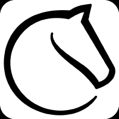

Sven Magnus Øen Carlsen (nacido el 30 de noviembre de 1990 en Tønsberg, Noruega) es un Gran Maestro (GM) noruego y el indiscutible número uno del mundo en el ranking de la FIDE de forma ininterrumpida desde 2011. Ampliamente considerado como uno de los mejores ajedrecistas de la historia (y para muchos, el mejor absoluto), fue el 16.º Campeón Mundial de Ajedrez tras conquistar la corona clásica en 2013 y defenderla con éxito en cuatro ocasiones hasta que renunció a revalidarla en 2023.A sus 35 años, Carlsen se mantiene en la cúspide competitiva, adaptando su carrera hacia formatos rápidos y torneos innovadores, mientras continúa superando hitos históricos
Faustino Oro (nacido el 14 de octubre de 2013 en Buenos Aires, Argentina) es un prodigio del ajedrez argentino que ostenta el título oficial de Gran Maestro (GM). Apodado por la comunidad internacional y los medios como el "Messi del ajedrez", es reconocido como uno de los talentos más extraordinarios de la historia reciente de este deporte.Con apenas 12 años, se ha consolidado como el Gran Maestro más joven del mundo en la actualidad y el segundo más joven de toda la historia del ajedrez (solo por detrás del estadounidense Abhimanyu Mishra). El título le fue ratificado oficialmente por la FIDE en agosto de 2026 tras alcanzar su tercera y última norma en mayo de ese mismo año durante el Festival Internacional de Cerdeña